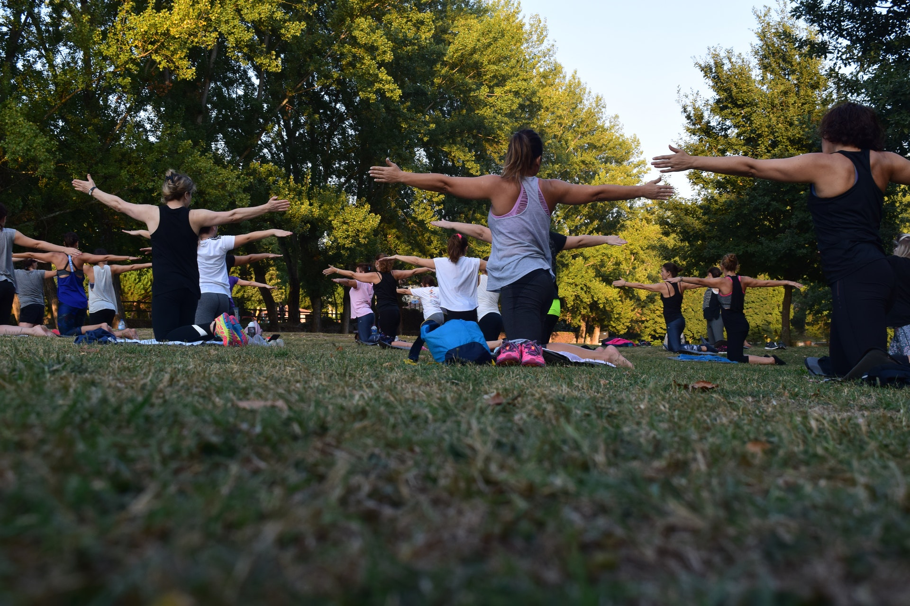
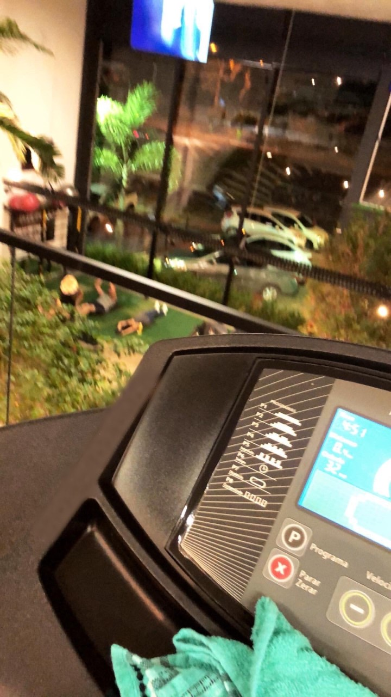
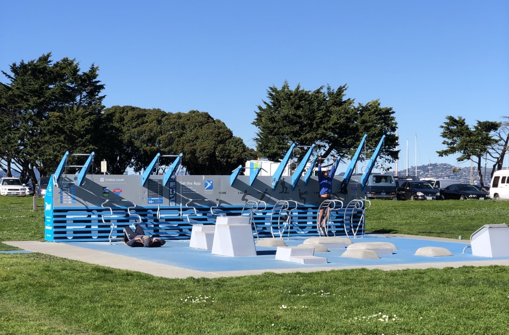
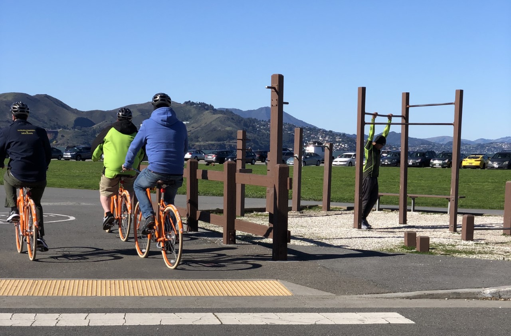
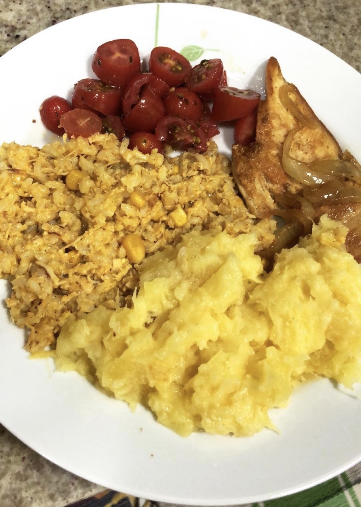
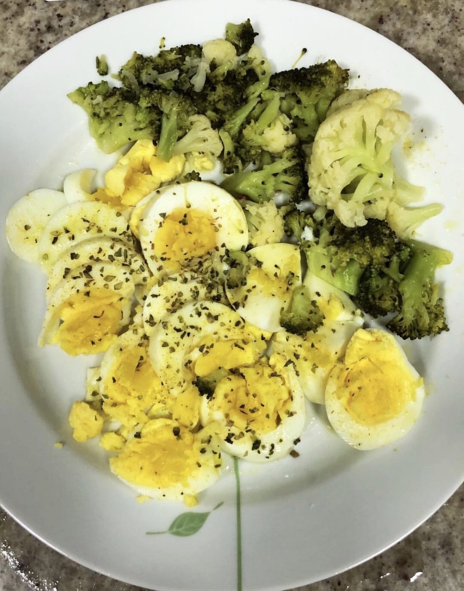
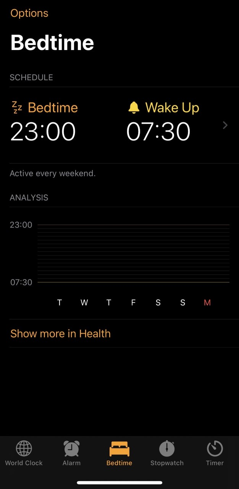

YOU GO

Hello, my name and Lucas, I'm natively Brazilian, graduated in civil engineering and now venturing into the tech world. In the following arguments, I will discuss a little bit about my hobby, and how it becomes a reason for fun.
A lot of people may disagree, or not believe when I institute this activity as a hobby, well, maybe in the end of this reading you change your mind, I`ll be happy to change your perspective, no matter how small.
So now I introduce my hobby, get rid of all your false judgments and prejudices, and face it not as an activity, but as a lifestyle. Yes, is possible to find pleasure in physical exercises, I assure you, and I will try now a little persuasion.
The science proves
We can find some scientific facts that prove what I'm saying, every time you exercise, a hormone is produced in your body, this little baby is called endorphin, and it's directly linked to the concept of happiness. A renowned newspaper has a article explaining why endorphins (and exercise) make you happy.
You in charge
A good part of all this? There are dozens, and I dare say hundreds of different ways to exercise, don`t get stuck in just a specific exercise, that is not a routine, that is you choosing what makes you feel good, what do you like to do and, as a bonus, a way to stay healthy.

My choice
As a favorite activity, I choose bodybuilding, in my opinion, very gratifying when the results are noticed, the differences in your body will encourage you. In one world? PRICELESS.
I introduce this modality in my life going to the gym, or exercising in parks at least five times a week, valuing my well-being and trying to keep all my other tasks in mind.

It is possible to follow some great professionals through their social networks, get tips and follow their routines, an important form of motivation. As a personal indication: Alex Croford, fitness model and trainer, London-UK.
How to do it
The results and the proper performance of this activity are based on three main components.
Discipline
Keep in mind that you don’t have to stop your life to workout, your will and satisfaction are your best allies in the process.
Some people can see the academy as a obligation, or even punishment for the moments of pleasure (in most cases involving food) and in this case, what should be a hobby, where do you find fun and pleasure, becomes something difficult and unsatisfactory to do.
My tip? Control your thoughts, everything revolves around our perspective, find something pleasurable, a friend, a place, a kind of physical exercise that satisfies you.
 
Good nutrition
Another primordial aspect to approach is your feeding, after all your body needs energy to work, not just during training but throughout the day. And I say again, the purpose isn`t deprive yourself, but to balance.
This subject it's something that involves a lot of discussion, and different opinions. But here's a Forbes article on how to start a healthy diet that was valid for me.
 
Rest
After exercising a specific muscle group, let it rest for one to two days. This gives your muscles a chance to repair and heal. On the other days, train different muscles. Be sure to work opposing muscles to keep your body balanced.
The sleep ranges is also essential for everything to work properly in our bodies, so make sure to save at least seven hours of nap.

By closing the matter, I turn myself to a inconsistent term called self-esteem. It`s important to emphasize that the perfect body doesn`t exist, each body has your own genetic, odd and private. Crack into bodies promoted by the media, it won't make your life easier. Focus on the mirror, on your body, and especially on your progress, which regardless of the dimension, becomes true through continuity.
The change doesn`t occur instantly, and without any effort, but over time you realize that this went from a hobby, from an activity, to your lifestyle. It will becomes part of your life, where you find countless benefits and feel accomplished at the end of the day.
This shouldn`t be a motivational text, and I'm not getting any kind of merchandising, but if I can leave a county at the end of it all: "JUST DO IT".